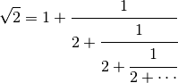
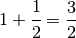
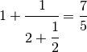
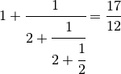
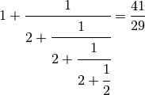

Convergents of e¶
Problem 65
The square root of 2 can be written as an infinite continued fraction.
sqrt(2) = 1 + 1/(2 + 1/(2 + 1/(2 + ... ))) = 1.414213...

The infinite continued fraction can be written, √2 = [1;(2)], (2) indicates that 2 repeats ad infinitum. In a similar way, √23 = [4;(1,3,1,8)].
It turns out that the sequence of partial values of continued fractions for square roots provide the best rational approximations. Let us consider the convergents for √2.




Hence the sequence of the first ten convergents for √2 are:
1, 3/2, 7/5, 17/12, 41/29, 99/70, 239/169, 577/408, 1393/985, 3363/2378, ...
What is most surprising is that the important mathematical constant, e = [2; 1,2,1, 1,4,1, 1,6,1 , ... , 1,2k,1, ...].
The first ten terms in the sequence of convergents for e are:
2, 3, 8/3, 11/4, 19/7, 87/32, 106/39, 193/71, 1264/465, 1457/536, ...
The sum of digits in the numerator of the 10th convergent is 1+4+5+7=17.
Find the sum of digits in the numerator of the 100th convergent of the continued fraction for e.
Solution
Use the euler04.digits() function.
from euler04 import digits
from fractions import Fraction
First, examine the repeating fraction.
def demo():
print( 1 )
print( 1 + 1/(2) )
print( 1 + 1/(2 + 1/(2)) )
print( 1 + 1/(2 + 1/(2 + 1/(2))) )
print( 1 + 1/(2 + 1/(2 + 1/(2 + 1/(2) ))) )
print( 1 )
print( 1 + Fraction(1,2) )
print( 1 + Fraction(1, 2+Fraction(1,2)) )
print( 1 + Fraction(1, 2+Fraction(1, 2+Fraction(1,2))) )
print( 1 + Fraction(1, 2+Fraction(1, 2+Fraction(1, 2+Fraction(1,2)))) )
Define a function to create a proper repeating fraction representation. Provide the constant and the sequence of denominator values.
def recursive_fraction( t_0, den ):
"""Compute a single recursive fraction value from t0 and
the sequence of denominator values.
>>> recursive_fraction( 1, () )
1
>>> recursive_fraction( 1, (2,) )
Fraction(3, 2)
>>> recursive_fraction( 1, (2,2,) )
Fraction(7, 5)
>>> recursive_fraction( 1, (2,2,2,) )
Fraction(17, 12)
>>> recursive_fraction( 1, (2,2,2,2,) )
Fraction(41, 29)
"""
frac= 0
for d in reversed(den):
frac= Fraction( 1, d+frac )
return frac+t_0
Summary version of the repeating fraction using a repeating pattern.
def fraction_steps( t_0, den_pat ):
"""Yield convergent steps of the recursive fraction from [t_0;den_pat]
Use recursive_fraction( t_0, (den_pat*(1+n//len(den_pat)))[:n])
:math:`\sqrt{2}` = [1;(2)] = fraction_steps( 1, (2,) )
Yields:
- 1
- 1 + 1/(2) == 3/2
- 1 + 1/(2 + 1/(2)) == 7/5
- 1 + 1/(2 + 1/(2 + 1/(2 ))) == 17/12
- 1 + 1/(2 + 1/(2 + 1/(2 + 1/(2 ) ))) == 41/29
The tricky bit is to avoid explicitly recomputing everything.
:math:`\sqrt{23}` = [4;(1,3,1,8)] = fraction_steps( 4, (1,3,1,8) )
Yields:
- 4
- 4 + 1/(1)
- 4 + 1/(1 + 1/(3))
- 4 + 1/(1 + 1/(3 + 1/(1 )))
- 4 + 1/(1 + 1/(3 + 1/(1 + 1/(8 ) )))
>>> converge2= fraction_steps( 1, (2,) )
>>> [ next(converge2) for i in range(10) ]
[1, Fraction(3, 2), Fraction(7, 5), Fraction(17, 12), Fraction(41, 29), Fraction(99, 70), Fraction(239, 169), Fraction(577, 408), Fraction(1393, 985), Fraction(3363, 2378)]
>>> converge23= fraction_steps( 4, (1,3,1,8,) )
>>> [ next(converge23) for i in range(7) ]
[4, Fraction(5, 1), Fraction(19, 4), Fraction(24, 5), Fraction(211, 44), Fraction(235, 49), Fraction(916, 191)]
>>> converge_e = fraction_steps( 2, (1,2,1, 1,4,1, 1,6,1, 1,8,1) )
>>> [ next(converge_e) for i in range(10) ]
[2, Fraction(3, 1), Fraction(8, 3), Fraction(11, 4), Fraction(19, 7), Fraction(87, 32), Fraction(106, 39), Fraction(193, 71), Fraction(1264, 465), Fraction(1457, 536)]
"""
n= 0
while True:
yield recursive_fraction( t_0, (den_pat*(1+n//len(den_pat)))[:n])
n += 1
Pattern for e, extended to cover the required number of terms.
def den_pat_e( steps ):
"""
>>> tuple( den_pat_e(12) )
(1, 2, 1, 1, 4, 1, 1, 6, 1, 1, 8, 1)
"""
for i in range(steps//3):
yield 1
yield 2*(i+1)
yield 1
Extract the digits of a particular numerator of a convergent series.
def numerator( convergent, position ):
"""
>>> converge_e = fraction_steps( 2, tuple(den_pat_e(10)) )
>>> n= numerator( converge_e, 10 )
>>> n
[1, 4, 5, 7]
>>> sum( n )
17
"""
[ next(convergent) for i in range(position-1) ]
term= next(convergent)
#print( term, float(term) )
numerator = term.numerator
return digits(numerator)
Test the module components.
def test():
"""
>>> demo()
1
1.5
1.4
1.4166666666666667
1.4137931034482758
1
3/2
7/5
17/12
41/29
>>>
"""
import doctest
doctest.testmod(verbose=0)
Compute the answer.
def answer():
converge_e = fraction_steps( 2, tuple(den_pat_e(100)) )
num= numerator( converge_e, 100 )
return sum( num )
Confirm the answer.
def confirm( ans ):
assert ans == 272, "{0!r} Incorrect".format(ans)
Create some output.
if __name__ == "__main__":
test()
ans= answer()
confirm( ans )
print( "The sum of digits in the numerator of the 100th convergent of the continued fraction for e:", ans )